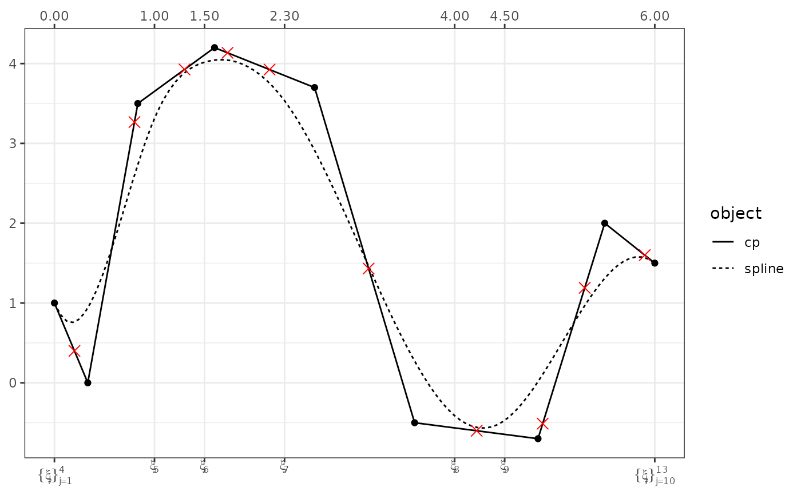

Find the y value of a Control Polygon for a given x
Value
cp_value returns the ordinate on the control polygon line segment for
the abscissa x given. x could be a control vertex or on a
line segment defined by two control vertices of the control polygon
provided.
cp_diff returns the vertical distance between the control
vertices of cp1 to the control polygon cp2.
Examples
xvec <- seq(0, 6, length = 500)
# Define the basis matrix
bmat1 <- bsplines(x = xvec, iknots = c(1, 1.5, 2.3, 4, 4.5))
#> Warning: At least one x value >= max(bknots)
bmat2 <- bsplines(x = xvec)
#> Warning: At least one x value >= max(bknots)
# Define the control vertices ordinates
theta1 <- c(1, 0, 3.5, 4.2, 3.7, -0.5, -0.7, 2, 1.5)
theta2 <- c(1, 3.4, -2, 1.7)
# build the two control polygons
cp1 <- cp(bmat1, theta1)
cp2 <- cp(bmat2, theta2)
x <- c(0.2, 0.8, 1.3, 1.73, 2.15, 3.14, 4.22, 4.88, 5.3, 5.9)
cp_value(cp1, x = x)
#> [1] 0.4000000 3.2666667 3.9260870 4.1350000 3.9250000 1.4320000
#> [7] -0.6005405 -0.5110000 1.1900000 1.6000000
df <- data.frame(x = x, y = cp_value(cp1, x = x))
plot(cp1, show_x = TRUE, show_spline = TRUE) +
ggplot2::geom_point(data = df
, mapping = ggplot2::aes(x = x, y = y)
, color = "red"
, shape = 4
, size = 3
, inherit.aes = FALSE)
